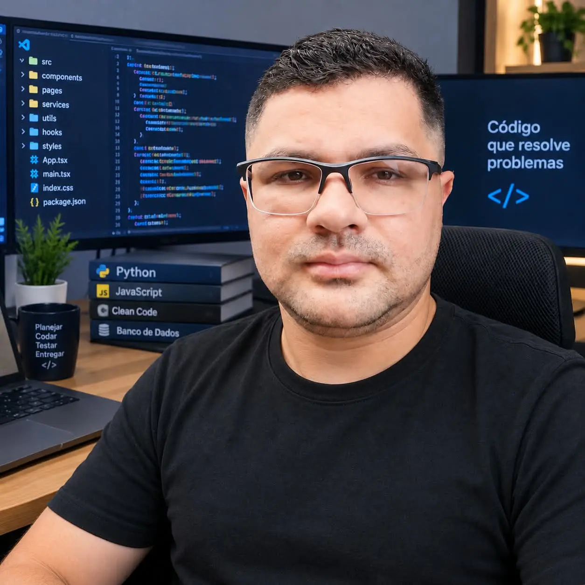

WDD 231
Sobre Mim
Olá! Meu nome é Bernardo Soares, sou natural de Fortaleza, Ceará, e atualmente moro em São José dos Campos - SP com minha família.
Sou casado com a Natasha e pai de duas meninas incríveis, a Esther de 8 anos e a Clarice de 2 anos. Amo passar tempo com minha família, seja jogando futebol, pescando ou fazendo atividades juntos.
Sou técnico em Eletrotécnica e atualmente estou cursando Desenvolvimento de Software pela BYU-Idaho. Trabalho remotamente como Auditor de Dados Mestres na empresa CH Master Data / Astrein.
Sou cristão, membro de A Igreja de Jesus Cristo dos Santos dos Últimos Dias, e tive a oportunidade de servir como missionário de tempo integral na Missão Brasil Belo Horizonte entre 2008 e 2010, uma experiência que marcou minha vida.
Foto do Estudante
